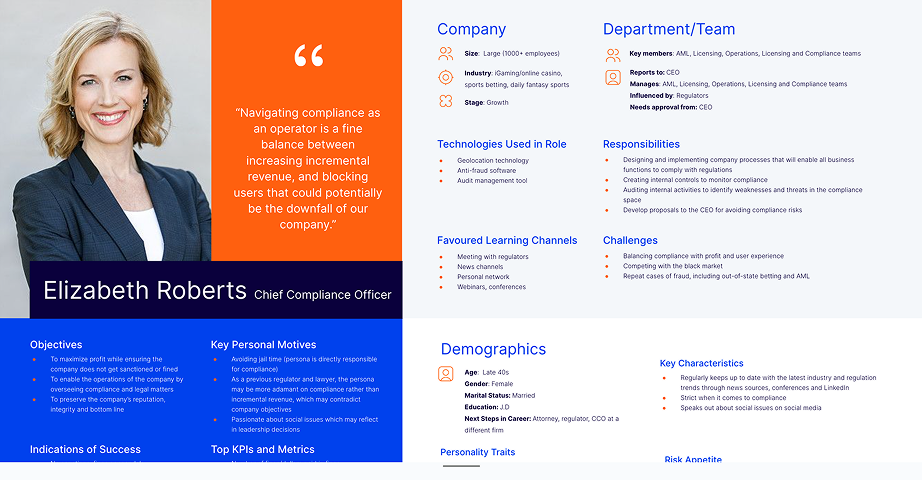
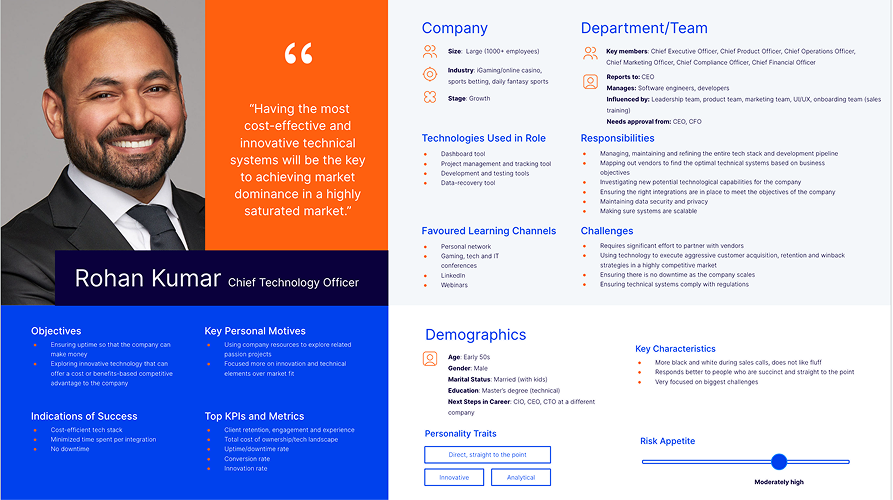
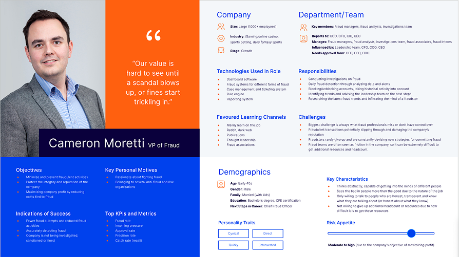
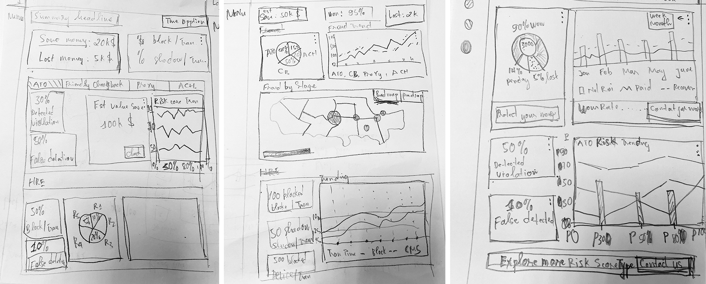
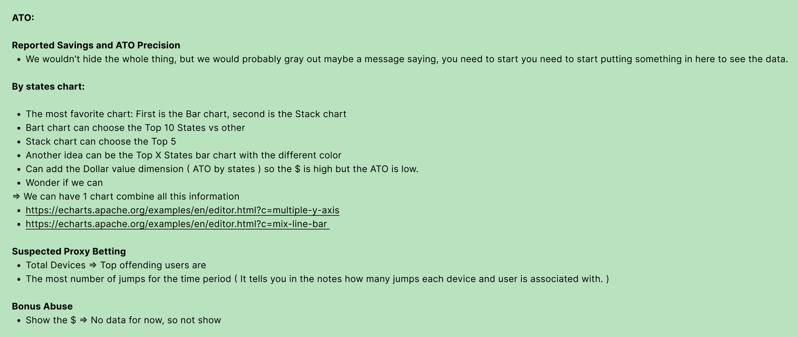
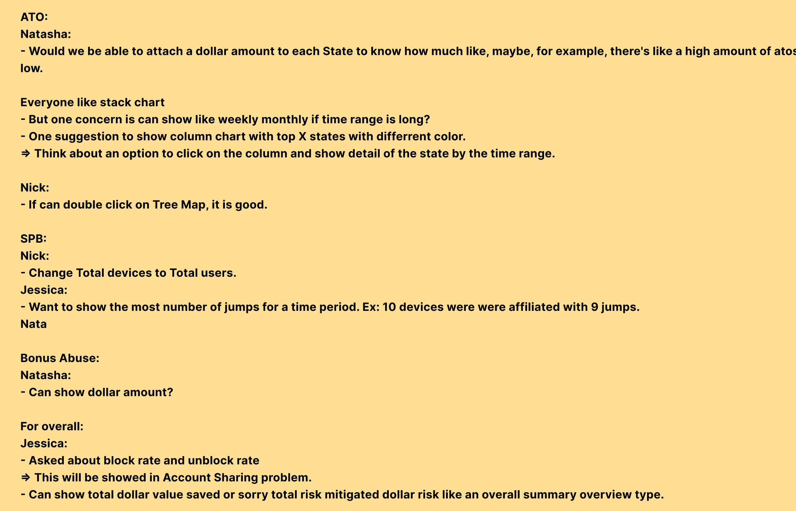
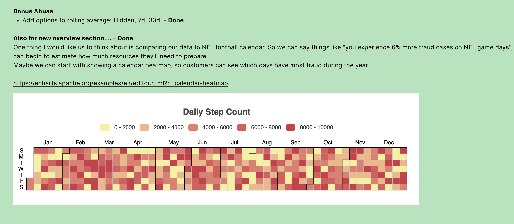
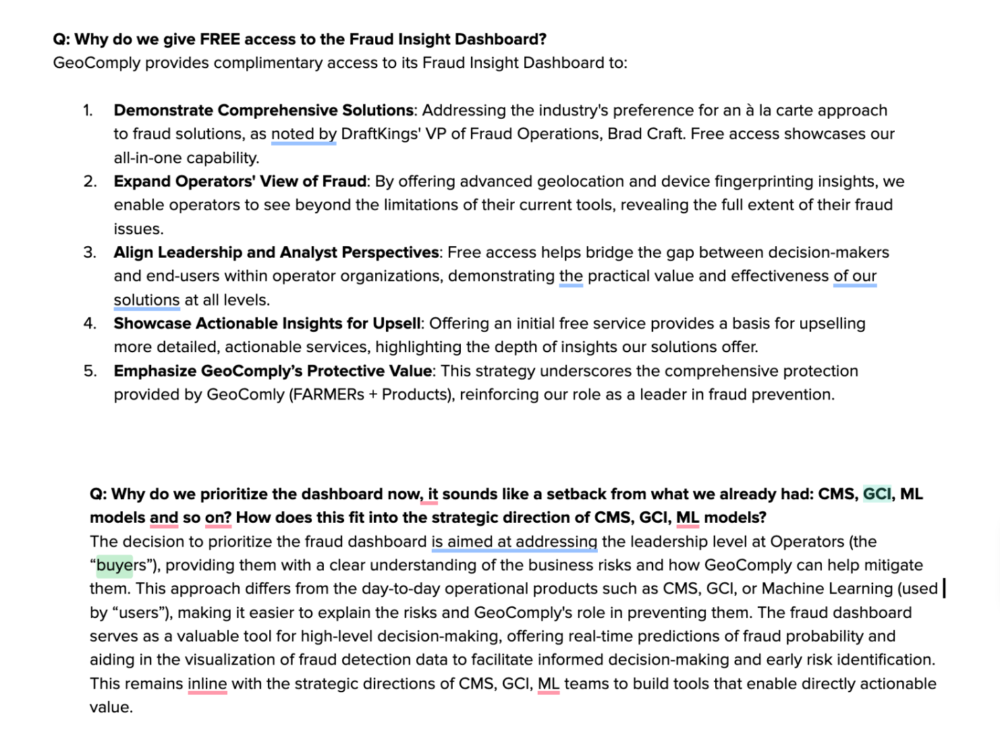
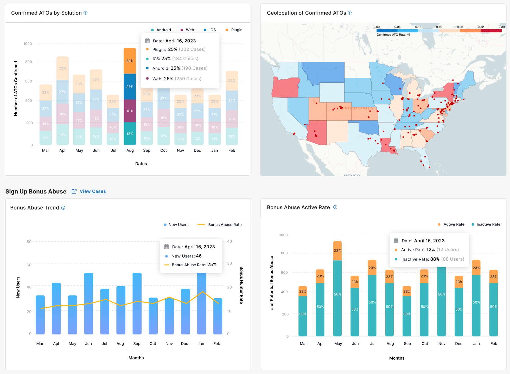
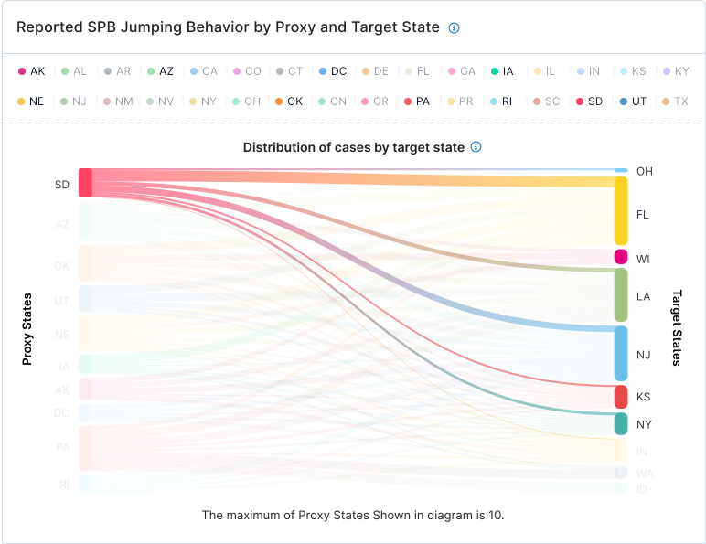

My ownership
Dashboard UX, information architecture, data visualization, product framing, and stakeholder collaboration.
GeoComply | Enterprise fraud analytics
A fraud intelligence dashboard that helped leadership teams understand risk, trends, and GeoComply product value without reading analyst reports first.

Case Study Highlights
Dashboard UX, information architecture, data visualization, product framing, and stakeholder collaboration.
Make fragmented fraud reporting understandable for executives without removing the depth fraud teams needed.
Personas, low-fidelity dashboard exploration, information layers, high-fidelity chart modules, and stakeholder feedback.
Supported enterprise demos, renewal conversations, clearer fraud visibility, and future reporting foundations.
Overview
Watchtower was one of GeoComply's major “Big Bets.” It was designed to help operator leadership teams understand fraud risk and see how GeoComply's anti-fraud products were performing.
The product needed to pull fragmented reporting into one place and make trends, risk areas, and product value easier to discuss with enterprise customers.
Business Goals
My Role
Business Context
GeoComply's anti-fraud ecosystem processes large-scale real-time fraud and compliance signals across multiple systems, products, and regions. However, reporting workflows were distributed through emails, Excel files, Google Sheets, and disconnected internal systems.
Existing tools were mostly built for analysts and investigation workflows. Leaders still needed one place to see the overall risk picture, trend changes, and business impact without asking analysts to prepare a report each time.
The Problem
Leaders needed to understand fraud trends, severity, business risk, and ecosystem performance quickly. The challenge was deciding which details belonged on the first screen and which details should sit behind drill-down paths.
At the business level, GeoComply needed a stronger executive-facing product story: show what was happening, why it mattered, and how GeoComply was helping reduce risk.
Target Users
Personas

Focused on fast understanding of compliance risks, fraud exposure, and business impact to protect revenue, reputation, and regulatory standing.

Focused on gaining visibility into system performance, operational risks, and technology effectiveness to support strategic business decisions.

Focused on fast understanding of fraud risks, trend changes, and prevention effectiveness to protect revenue, reputation, and operational performance.
Research & Discovery
I ran discovery with engineering managers, product managers, fraud teams, leadership, and engineers to understand which metrics existed, which metrics were feasible, and which ones were useful for customer-facing conversations.
I also worked with developers to understand data flow, real-time limitations, system dependencies, and technical gaps so the dashboard direction stayed buildable.
Key Insights
Early Exploration
One of the biggest UX challenges was simplifying dense fraud intelligence into an experience executives could understand within seconds. I explored multiple low-fidelity concepts to validate dashboard hierarchy, KPI prioritization, chart usefulness, real-time monitoring approaches, information density, and executive scanning behavior.
The goal was not visual polish. It was to test what leadership needed to see first, what fraud teams still needed underneath, and what engineering could support.

Initial project thinking and idea exploration before refining the dashboard hierarchy and information architecture.
Information Architecture
Fraud trends, business risks, ecosystem health, high-level KPIs, and real-time indicators for fast executive scanning.
Trend movement, comparative metrics, regional analysis, anomaly detection, and fraud patterns for deeper strategic analysis.
Analyst workflows, detailed fraud investigation, operational validation, and deeper reporting analysis.
Validation
The project involved recurring collaboration and validation with leadership stakeholders, PMs, engineers, and fraud analysts. Feedback helped refine KPI prioritization, chart readability, reporting hierarchy, real-time visibility patterns, and executive-focused storytelling.
Collaboration
I worked closely with PMs, engineers, fraud analysts, QA teams, and leadership stakeholders to align goals, validate reporting priorities, understand technical constraints, support implementation reviews, and refine the dashboard through feedback.
Stakeholder Feedback
Throughout the project, feedback from PMs, leadership stakeholders, engineers, and fraud teams helped validate whether the dashboard was communicating the right level of detail. These reviews clarified what needed to be simplified, what needed more evidence, and which parts of the experience were strongest for executive-facing conversations.

Feedback helped clarify which KPIs were useful for leadership, which charts created confusion, and where the dashboard needed stronger labels or grouping.

Reviews with PMs, engineers, and fraud analysts helped separate executive summary needs from operational investigation needs.

Stakeholder comments shaped the final hierarchy, especially around trend visibility, risk severity, and chart readability.

The feedback loop kept the work grounded in real reporting needs instead of turning the dashboard into a collection of impressive but unclear charts.
Hi-Fi Design
The final UI used a modular dashboard structure with summary cards, trend charts, comparative views, and drill-down areas. The priority was fast scanning first, then deeper analysis when needed.
Design System
The modular dashboard architecture supported multiple fraud domains, expandable KPI expansion, consistent reporting patterns, and future ecosystem growth.
UX Decisions
Leadership reacted faster to trend movement and anomalies than isolated operational metrics.
Executives received simplified summaries while operational teams retained deeper analysis paths.
The dashboard explained business impact, fraud severity, and ecosystem value instead of only technical metrics.
Consistent terminology helped different teams interpret fraud metrics in the same way.
Hi-Fi Dashboard Details
In the high-fidelity phase, I focused on making complex fraud patterns easier to scan and discuss. The dashboard used focused chart modules to explain where risk was concentrated, how behavior shifted across regions, and which fraud signals required leadership attention.

A high-fidelity dashboard view showing how executive summary, fraud trends, and supporting modules worked together in a single reporting experience.

A map-based chart helped leadership quickly understand geographic concentration of account takeover activity and identify where risk needed deeper review.

A comparative chart made proxy and target-state behavior easier to interpret, supporting fraud pattern analysis without forcing users into raw tables.
MVP & Iteration
Because the data ecosystem was complex, I helped define MVP scope and prioritize the modules that mattered most for leadership conversations. We reviewed each release with stakeholders, collected feedback, and adjusted the dashboard based on what was useful.
Outcome & Impact
The final solution gave leadership a clearer way to review fraud trends, risk areas, and ecosystem performance. It also reduced the need to rely on scattered manual reports for every customer or internal discussion.
The dashboard supported enterprise demos, customer retention conversations, and a clearer explanation of GeoComply's anti-fraud capabilities.
Watchtower became an important product for GeoComply because it helped support contract renewal conversations with enterprise clients, made fraud visibility easier to explain, and created a foundation for future reporting products.
The project also became an important starting point for expanding executive-facing analytics experiences across the GeoComply ecosystem.
Reflection
This project reinforced that enterprise dashboards are not just data displays. The hard work is choosing what matters, removing noise, and helping different teams interpret the same information in the same way.
It strengthened my experience in enterprise UX, analytics, information architecture, data visualization, and cross-functional decision-making.
Contact
Location: Di An Ward, Ho Chi Minh City. Open to Senior Product Design, UX Design, and design system opportunities.